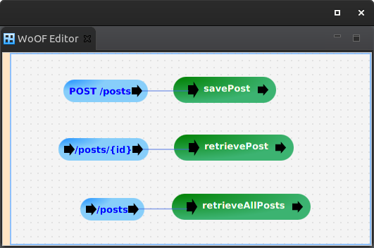

This tutorial demonstrates using Firestore to read/write data from Google Firestore.
The example used in this tutorial is three end points:
The configuration of the end points are as follows:
With the implementation as follows:
public class FirestoreLogic {
public void savePost(Post post, Firestore firestore) throws Exception {
DocumentReference docRef = firestore.collection(Post.class.getSimpleName()).document();
docRef.create(new Post(docRef.getId(), post.getMessage())).get();
}
public void retrievePost(@HttpPathParameter("id") String identifier, Firestore firestore,
ObjectResponse<Post> response) throws Exception {
Post post = firestore.collection(Post.class.getSimpleName()).document(identifier).get().get()
.toObject(Post.class);
response.send(post);
}
public void retrieveAllPosts(Firestore firestore, ObjectResponse<Post[]> response) throws Exception {
List<QueryDocumentSnapshot> documents = firestore.collection(Post.class.getSimpleName()).get().get()
.getDocuments();
Post[] posts = documents.stream().map((document) -> document.toObject(Post.class)).toArray(Post[]::new);
response.send(posts);
}
}
The Firestore entity is as follows:
@HttpObject
@Data
@AllArgsConstructor
@NoArgsConstructor
public class Post {
private String id;
private String message;
}
The following dependency is required:
<dependency> <groupId>net.officefloor.persistence</groupId> <artifactId>officenosql_firestore</artifactId> </dependency> <!-- Required for testing --> <dependency> <groupId>net.officefloor.persistence</groupId> <artifactId>officenosql_firestore_test</artifactId> <scope>test</scope> </dependency>
Firetore is configured in application.objects as follows:
<objects> <supplier source="net.officefloor.nosql.firestore.FirestoreSupplierSource" /> </objects>
To make local testing easier, the following unit tests demonstrate automatically setting up a local data store for testing.
public @Order(1) @RegisterExtension final FirestoreExtension firestore = new FirestoreExtension();
public @Order(2) @RegisterExtension final MockWoofServerExtension server = new MockWoofServerExtension();
@Test
public void ensureCreatePost() throws Exception {
// Have server create the post
Post post = new Post(null, "TEST");
MockWoofResponse response = this.server.send(MockWoofServer.mockJsonRequest(HttpMethod.POST, "/posts", post));
response.assertResponse(204, "");
// Ensure post created
Post[] created = firestore.getFirestore().collection(Post.class.getSimpleName()).get().get().getDocuments()
.stream().map((document) -> document.toObject(Post.class)).toArray(Post[]::new);
assertEquals(1, created.length, "Should only be one created post");
assertEquals("TEST", created[0].getMessage(), "Incorrect post");
}
JUnit 4 example:
private final FirestoreRule firestore = new FirestoreRule();
private final MockWoofServerRule server = new MockWoofServerRule();
public @Rule final RuleChain ordered = RuleChain.outerRule(this.firestore).around(this.server);
@Test
public void ensureCreatePost() throws Exception {
// Have server create the post
Post post = new Post(null, "TEST");
MockWoofResponse response = this.server.send(MockWoofServer.mockJsonRequest(HttpMethod.POST, "/posts", post));
response.assertResponse(204, "");
// Ensure post created
Post[] created = firestore.getFirestore().collection(Post.class.getSimpleName()).get().get().getDocuments()
.stream().map((document) -> document.toObject(Post.class)).toArray(Post[]::new);
assertEquals("Should only be one created post", 1, created.length);
assertEquals("Incorrect post", "TEST", created[0].getMessage());
}
The next tutorial covers using Objectify for the Google App Engine DataStore.